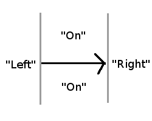

Creating Reactions
There are two ways to draw reactions in JChempaint:
- You can chose and draw
the reaction arrow. All molecules to the left of that arrow become reactants,
everything to the right products and everything on the arrow catalysts in a new
reaction. This illustration shows what is meant with "left", "right" and "on":

Note the whole
drawing panel is divided in these three sectors and all molecules not already
part of a reaction become part of the new reaction.
- You can also declare components part of a new or existing reaction. So you
first draw all reactants and products,
best from left to right. Then right click on the first reactant, chose "Reaction
->Make Reactant in new reaction". Right click on any other reactant and chose
"Reaction->Make Reactant in existing reaction". Right click on any product
and chose "Product->Make Product in existing reaction". The reaction will then
be rendered with + and arrows as appropriate. In this way, you can also add
molecules to a reaction.
If you want to layout the reaction
cleanly, just do "Tools->Clean Up" - this will layout molecules straight from
left to right.
You can have multiple reactions in one drawing, for this choose "Reaction->
Make Reactant/Product in New Reaction" once you drew your first reaction. If you
then do "Reaction->Make Reactant/Product in Existing Reaction", you are asked to
which reaction you want to add.